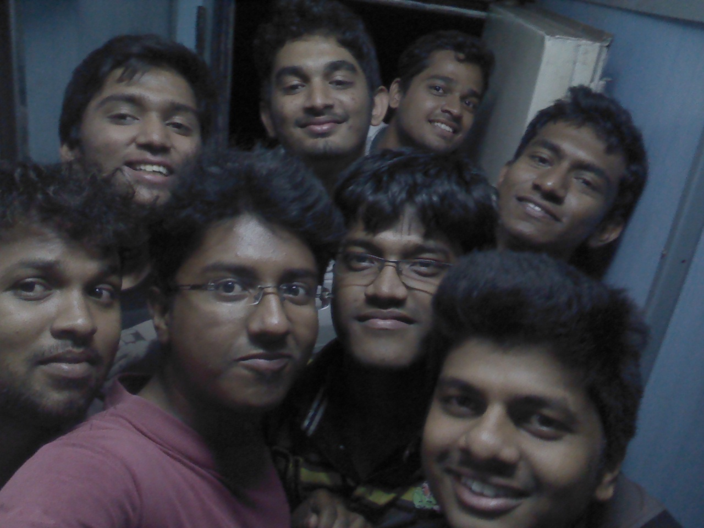
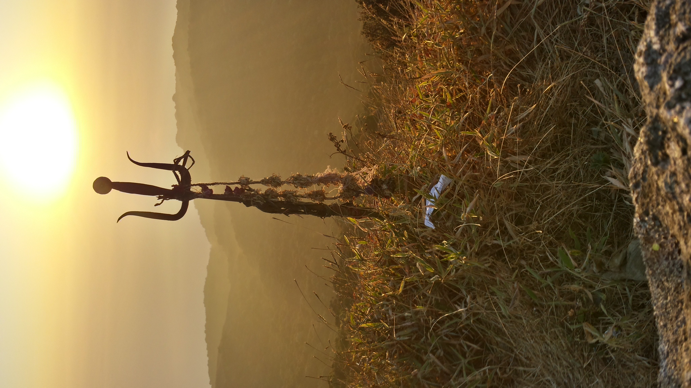
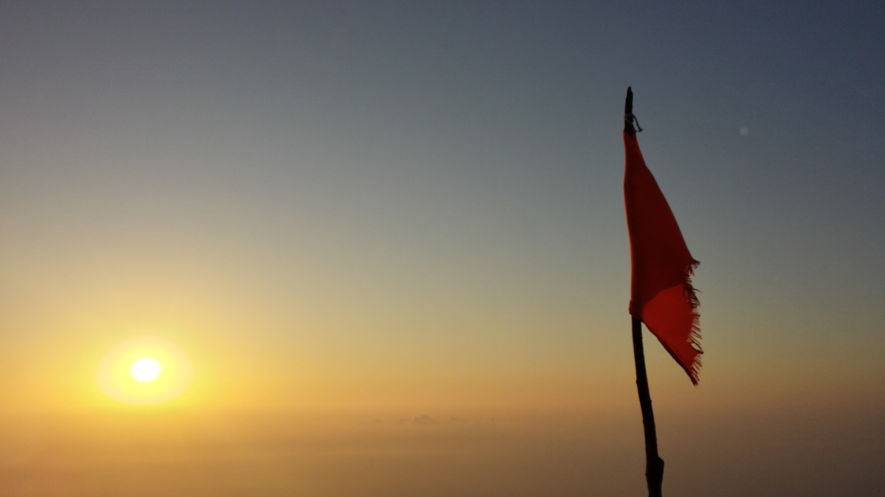
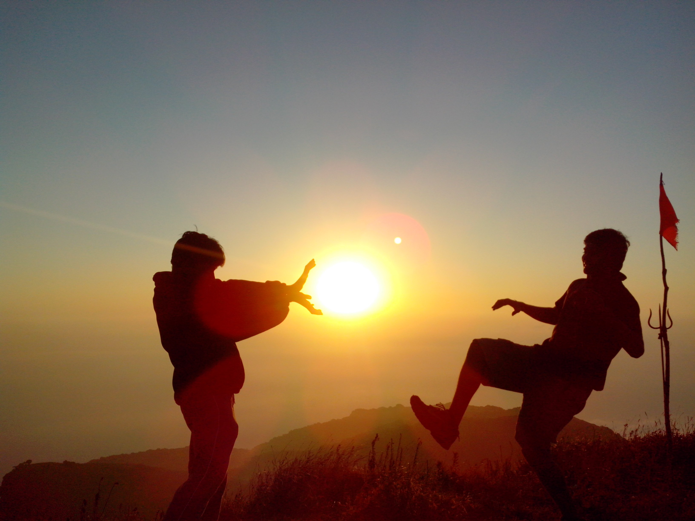
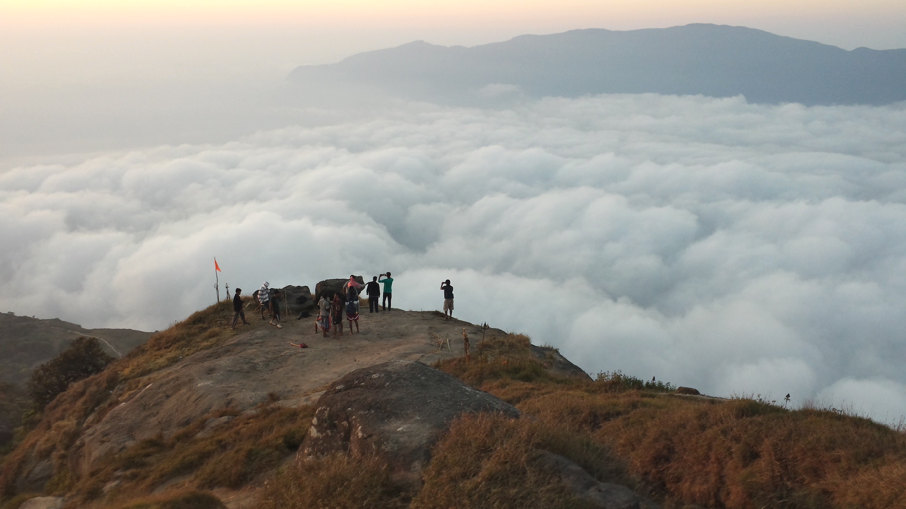
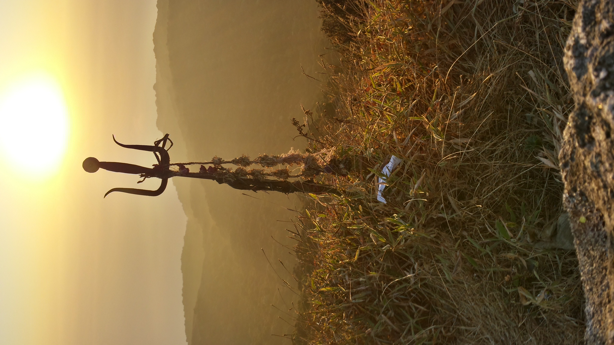
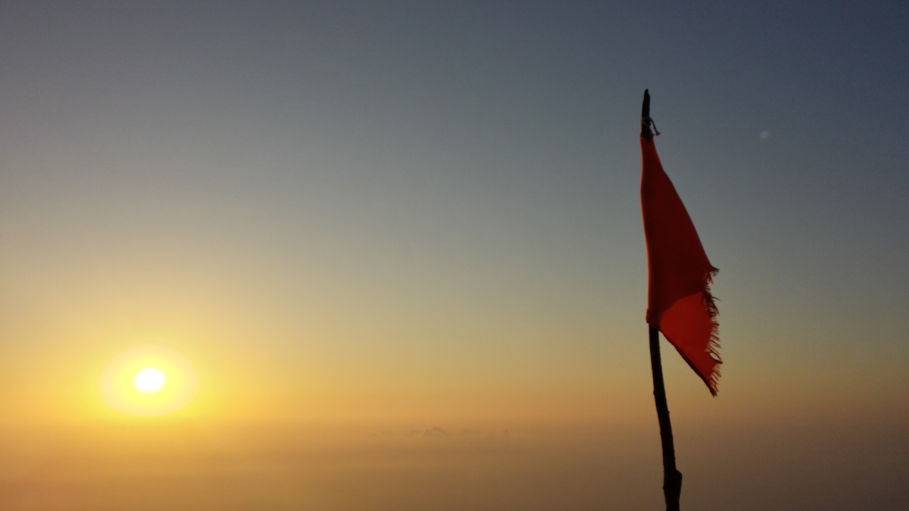
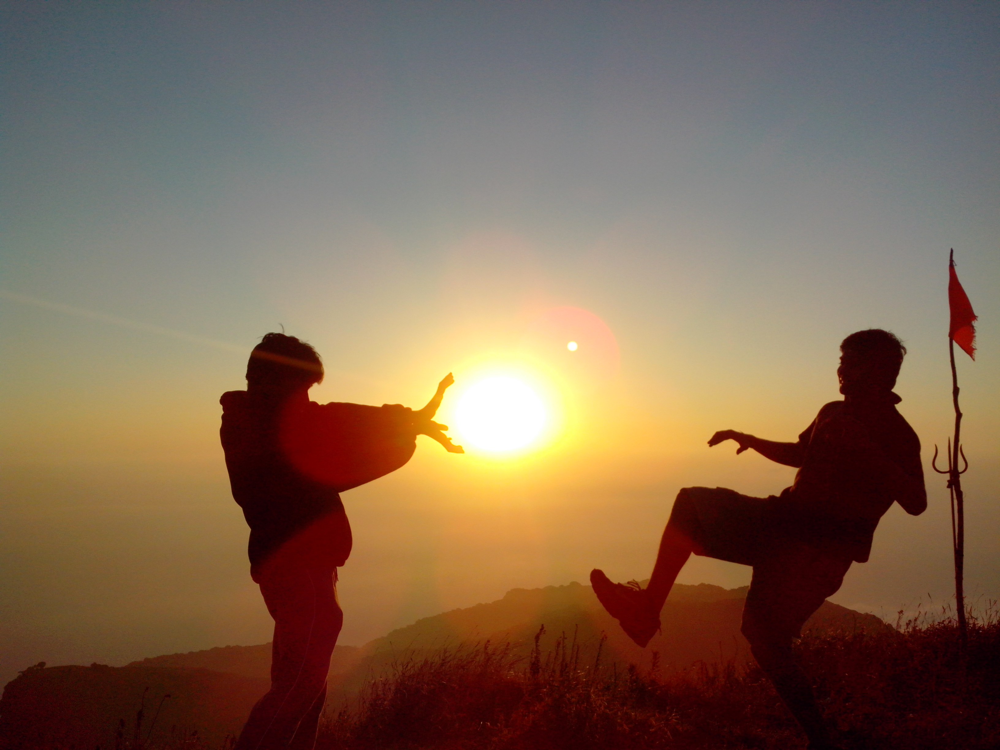
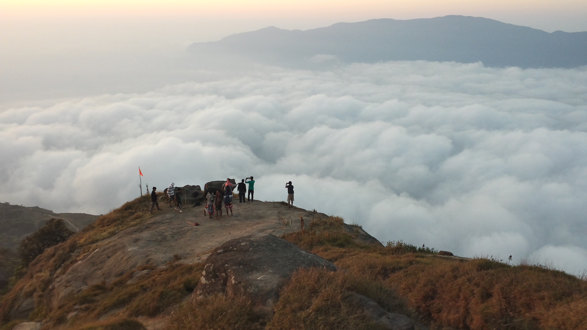

The Brat Pack - Gautham Vasan, Naresh Balaji, Gowtham Kumar TSB, Ram Aravind KM, Adhav Rk, Vignesh Sk, Siddharthan Boxer, Aravind G, Sarathy Kannan
Date: 25th Feb 2015
Climb mountains not so the world can see you, But so you can see the world
It's funny how certain things happen in life. Just a week back, we weren't even planning on moving our a**es from the room to lab for our projects. Our life was normal. Given the farce that projects and classes are in the last sem, we had a lot of free time to chit chat, watch a lot of movies and tv shows, reminisce over the past, introspect, retrospect, exercise and pretty much do anything other than study. The turning point was when I read Arun Pillai's note about his trekking experience. I was discussing with Sarathy Kannan about Darwin's trekking photos and he showed so much enthusiasm about their trip that I just had to read Arun's note. The description was so compelling and beautifully articulated that we just had to go. Given the freaks I have for friends, I knew for sure that we were going on this trek. We started booking tickets to Coimbatore and looked forward to one hell of an adventure.
The first thing we did was collect all sim cards we had to hitch a free ride with Ola. A ride from NIT Trichy to Central Junction costs anywhere between Rs 260 - 290 in Ola. Referral of Rs 100 + 1st time use code APP200 gives Rs 300 in your account. We travelled by cab in Trichy for free throughout :P. For trekking essentials, look at the bottom of this articles, I've listed it all.
The Journey
 Selfie en route to Coimbatore :DWe started from our campus at around 3:50pm to catch the Janshadabdi Express from Mayiladuthurai to Coimbatore at 5:00pm. We arrived half an hour early at the railway station and headed straight to the nearby hotel. The trek was planned to be an all nighter where we would climb all night to the top of the 7th hill (Yeah, there are 7 hills) and watch the sunrise, take some pictures where some could potentially be our Facebook Dps, take a bath on a pond on the way down and head back down the hill. Not a complicated plan. Except we were going to climb a steep hill with a forest (bears, simhams, monkeys, elephants, etc.) and it obviously didn't have any toilets. Well you could do your business in the bushes, but a vast majority of us decided not to. Aravind had this bright idea (not so much :P) of eating a lot in the railway station so that you'd be forced to use the restroom before the trek. So effectively you didn't have to worry the next day. Let's just say this idea wasn't taken seriously by everyone except a few. So amidst all this planning at Vasanta Bhavan in the Railway station, the train arrived at around 4:50pm and we got in just to find out our seats were randomly allocated. We didn't feel like sitting anyways, so for the most part of the journey we were standing near the entrance of the train carriages, sticking our heads out and posing for pics, talking about Space, India, Philosophy, School and college life, pretty much everything that comes to mind. When you are travelling by the countryside with idyllic settings, it's hard not to reminisce over the past and enjoy the present with your near and dear ones. We created a ruckus in the train. But funnily though, a few passengers seemd to actually enjoy it. Probably it reminded them about their carefree days as college goers. A pleasant gentleman nearby warned us about the dangers lurking at Vellaingiri hills (bears, elephants, etc.) and told us about the bus routes and cabs available to the place. The train ran late and we reached the place around 10:00pm. After dinner, we booked a cab since no buses were available. Ola is not an option since they do not take you away from the city. We booked a Tavera from Fast track for the Nine of us and started heading 42kms away from the city.
We reached the place around 12:00pm and bought some tender coconuts and bamboo sticks at the bottom of the temple. Only one group had started to climb before us. So we pretty much had the mountain to ourselves. Just the way we wanted. The bamboo sticks cost Rs 20 each and being Indians, the first thought in our minds was if it was even necessary. Turns out, it was the single most effective investment we ever made. I only regret leaving my stick in the temple instead of bringing it back to my room. We head upstairs and awaken a priest with the noise of our footsteps. We pay our respects, open our bags and remove all plastic covers. Yes, plastics are not allowed in the hills. So they wrapped our biscuits in separate paper covers and handed it back to us. We had two water bottles along with us just to ensure that we don't run out of water before we reach the bamboo taps.
 At the entrance of the Shiva Temple, Velliangiri hills.
At the entrance of the Shiva Temple, Velliangiri hills.
The first hill had steep steps made out of stone. It was pitch black except for a few traces of light from the half moon. 15 mins up and Aravind and Ram were struggling. The masala dosa was taking its toll on Aravind and I have no clue as to why Ram was initially tired. The time was around 12:30am when we started to climb, so there was a rush about climbing it as soon as possible. The place around was beautiful and I could see a wide variety of insects that lived in my room crawling over the steps (Thank you NIT-T for giving me a glimpse of life in the wilderness). We didn't look around much though since it meant taking our eyes of the steps which could result in grave injuries. We started taking small one minute breaks for those who were tired. Aravind vomitted once and got the masala dosa out of his system. He felt rejuvenated almost immediately and started advancing fast. Ram was suddenly bursting with energy and we all headed uphill without any other delays. We had been climbing for about an hour and the Vinayak Temple was the first sign that we were proceeding in the right direction. Though our spirits soared momentarily, TSB reminded us of the fact that we took one hour for the first hill and if we were to proceed at this rate, we would miss the sunrise. I actually didn't care anymore though. At that moment it felt like we were focusing too much on the end destination rather than enjoy the serenity of the place.
The second hill was similar to the first one except that it had a lot of twists and turns, dead tree logs blocking the path and a few boulders. The sky started getting clearer and clearer and we couldn't help but smile at the beauty of the stars. When we looked back, the city looked far away and the night lights made it look so stunning. We couldn't help but wonder about how breath taking the visuals would be from the top of the hill. The end of the second hill was marked by a convenience store which sold tea and biscuits. We embarked on our seemingly endless journey and started to climb the third hill. Somehow talking among ourselves made us forget the difficulty of the trek. What intrigued us the most was how gruelling it would have been for the people who laid the steps en route to the temple. It was an example of sheer human grit and perseverance. By the end of this hill, we came across our first source of natural water from bamboo planks on the rocks. The tricklet of water running downhill left us with such an everlasting taste in our mouth that it would give bottled water manufacturers a run for their money. It was refreshing to wash our faces there and we started filling our empty bottles with this luscious mountain water.
The third hill was again with its own dilapidated stairs and broken trees. I had the stupid idea of having small spoons of glucose to have small bursts of energy. Turns out glucose is a dehydrating substance. We never told Boxer that we felt the need to drink a lot more water just to deny him the pleasure of saying - "I told you so" :P. We were walking up for a while when boxer wanted to "do his business in the bushes". Well, peeing on the trees is alright. But crapping on a steep hill with a myriad of insects and few dangerous animals at the beginning of the twilight hours is a whole different level of hilariousness. We couldn't help but make fun of him and laugh at his expense when he went prepared with tissues, water and soap :D. Whatever said and done, he was the only one with maximum stamina and plenty of trekking and jogging experience. He had his own quirky way of telling stories that we burst with laughter over this incident.
The fourth hill was pretty soothing in the sense that it wasn't very steep and relatively larger stretch of flat paths. The trek had started to make us sweat and it seemed like a good time to remove my shirt. The cold air brushing against me was invigorating and the tranquil nature of the surroundings helped me ease in to a sangfroid state of mind. By the end of the 4th hill, we split in to 2 groups. The first one wanted to travel faster and reach the hill sooner. They enjoyed their pace and wanted to wait for the sunrise atop the 7th hill. The second group which I was a part of wanted to hike at a leisurely pace and let the beauty of the surroundings in the twilight sink in. The 1st group started their hike uphill while we lay on our backs watching the stars and making out constellations. The stars were unlike anything I've seen before. The sky was so clear that Sarathy could help us figure out the patches which was the Milky way Galaxy and we started chit chatting there. Aravind dozed off a bit and we knew this was the right time to get back on track.
We noticed some fresh crap on the footpath which left us a little scared as to the prowling of any nearby animals. Hoping that we weren't its pray, we continued treading uphill without much further ado.The bamboo sticks were proving to be increasingly useful and we We were bewildered when suddenly both our paths were descended steeply downhill. We were pondering if we took a wrong turn or if we should climb down when we heard Boxer's booming voice. Their flashlights looked like they were coming from the same altitude as ours. But we had to climb down slowly and very carefully and catch up with the rest of our group. It seemed like a very long arduous journey before we reached the sacred pond. We talked about taking bath in it on our way downhill and reached the end of the 6th hill marked by yet another convenience store. The store owner woke up and tried really hard to sell us "Sukku" Coffee to our tired and disinterested bunch. It was 4:45am and we enquired him ETA (Estimated Time of Arrival) to reach the top of the 7th hill. He told us it would take 1 and a half hours more which demotivated us a lot since it meant missing the sunrise. We ate some fruits and started our hike again wondering if the 1st group had reached already.
The 7th hill was a pretty dangerous hike and we had to use both our hands and legs to climb carefully uphill without injuring ourselves.If we did slip, we could get our hands and legs fractured. But that wasn't the issue. When your friends themselves are entirely drained of energy, who would carry you back downhill to get you tended and taken care of? The climb was treacherous since we could rely only on our torch for illumination. It would have been around 60-70 degrees steep. Climbing in darkness helped a bit since it blind sided our view from the precipitous, towering hill. An oft repeated scene in movies is when one rock falls down and a few seconds later a landslide/avalanche begins. We realized the gravity of such a hackneyed scenario only when we were climbing over the hills. "Vel", a spear held by Lord Murugan was thrust in the ground at many locations giving us an idea that we were close to the temple. The constant light from the temple and the looming threat of sunrise in a few minutes made us climb at a much more brisk pace and reach the top.
The elation of reaching the top of the hill cannot be described merely in words. We arrived at around 5:45am and we still had plenty of time to witness the spectacle of the sun rising over the horizon. As we started walking towards the temple, we saw many caves and shivalingams and sadhus near the place. Plenty of Vels were thrust all around the place. I could feel the sanctity and tranquility of the place and was enraptured with the bucolic settings that the place offered. We were overjoyed when we could hear TSB, Boxer, Raam and SV's voice and we rushed to meet them. They too were psyched to find us arrive just in time and hollered back to us with instructions towards their location. They had found a spectacular spot, i.e., a rock from where we could see the sun rise without any obstruction in view and overlooking the clouds. Aravind was totally exhausted and started resting near the spot. Naresh and Adhavan went around the place and stretched their legs for a while. Sarathy and I headed towards the rock and lay next to them. We had all put on our sweatshirts by the end of the 6th hill and it was getting colder every minute. But we didn't care though. We were most certainl there to make the most of what we had. It was the perfect location to witness the sun rise. Looking at the crimson of the sun spread over the entire horizon is not something everyone sees in their lifetime and I'm happy that we did. It was a moment where a picture would speak louder than a 1000 words. Once the sun showed its head, we started cheering and went ahead to take pics and selfies. Like boxer aptly described it, the clouds looked like bed over which we wanted to jump, play and sleep. Naresh was in a some sort of zen state of mind and was focussed on capturing the scenic beauty on screen.
 Adhav and Aravind take a small nap while the rest of us are frolicking around
Adhav and Aravind take a small nap while the rest of us are frolicking around
It probably wasn't the most difficult trekking spot. It's most definitely not even comparable to climbing the Mount Everest. But that didn't matter. For us, it was in the small things - The colours of the trees, the shape of the rocks, the caves and shiva lingas nearby, the clouds which brushed past against us. We were just a bunch of euphoric idiots in their early twenties, blissfully unaware of the troubles we had in our real world. At that moment, we didn't have to worry about our future, think about what we were doing with our life or make any decisions. All we had to do was be that immature kid we always wanted to be, jump up and down, make funny faces and act like we owned the place. I guess that is how life was meant to be. Well, we have a foolproof way of messing up things and making our lives as complicated as possible. Sorry to drift apart in to some strange musings about life. But when we hike over such a difficult trek, it kinda puts life into perspective. It gives you ample time to refelct upon your actions and release any bottled up stress or anger. All of us were either atheists or agnostics. So we really didn't spend much time paying our respects to the gods or sadhus. But our hearts go out to the ones that built this heaven. The place is so surreal that it seriously raises the questions about the existence of a creator or some higher power.
 Selfie on top of Velliangiri hills
Selfie on top of Velliangiri hills
 Trishul in glorious sunlight (PC: Naresh)
Trishul in glorious sunlight (PC: Naresh)
 Thalapathy-esque shot with the Trishul, flag and the rising sun (PC: Raam Aravind)

Trishul basking under the glorious sun (PC: Naresh)

Thalapathy-esque shot with the Trishul, flag and the rising sun (PC: Raam Aravind)

TSB and I trying to recreate the Kamehameha from Dragon Ball Z

We're on top of the clouds! Yay!!
Thalapathy-esque shot with the Trishul, flag and the rising sun (PC: Raam Aravind)

Trishul basking under the glorious sun (PC: Naresh)

Thalapathy-esque shot with the Trishul, flag and the rising sun (PC: Raam Aravind)

TSB and I trying to recreate the Kamehameha from Dragon Ball Z

We're on top of the clouds! Yay!!
Once all the fun and frolic of taking pics was over, we had our breakfast (yeah, some biscuits, fruits and cereals) we rested for a while and decided to head downhill. Climbing downhill was an altogether different task since you could let gravity do its job for you. One misstep and you could go tumbling forward a long while. Basically its like humpty dumpty had a great fall. But climbing down with small steps is really difficult. So we decided to jog and use the momentum to travel at a much faster pace. We reached the pond very soon and decided to wash ourselves using its water. It was around 9:30am and the area was still covered with mist. Switching off the phones and tablets proved to be brilliant decision. We stripped down to our boxer shorts and stepped into the pond. Though it looked like normal pond with a surrounding temperature of around 20 degrees, I swear, it felt like ice cubes pricking all over my body when I got in to it. It's depth was probably around only one to two feet. But the ice cold water quickly jolted us to our senses. The human body is indeed a fascinating piece of machinery. It quickly learns to adapt to such a temperature and we started to slowly ease ourselves in to the pond. We splashed water on each other, used soap to wash ourselves and even jumped around in that area. The dirt and algae had settled over time and we seemed to be making the water murky with all our monkey business. I guess it was no use taking bath in that water with the sole purpose of cleansing ourselves. But it did rejuvenate us and we were all fresh and brimming with a new found energy and confidence.
 The gym boys posing in ice cold water
The gym boys posing in ice cold water
Climbing down the next few hills was pretty normal and uneventful except for us talking about random stuff and pulling each others leg. The hills and forests appeared even more beautiful amidst the mist and sun light. SV injured himelf a little by spraining his ankle and falling down once. Adhavan sprained his knee somewhere near the 4th hill and started limping with his stick in a similar fashion to Kaipulla Vadivelu from Winner. Though we did make fun of his "Avvaiyar" walk at several instances, we had to admit that it was going to be a increasingly difficult climb for him downhill. You could say he didn't have any other choice but to climb down, but his resolve to climb down at the best possible pace was admirable.
Ram and Boxer took a much slower than usual pace and stopped often to take pictures. Aravind and I made it a point to stop at the lemonade stall in the 4th hill and Watermelon stall in the 3rd hill and refresh ourselves. By this point Naresh, TSB, Adhav and Sarathy were much ahead of the rest of us. We were becoming increasingly lazy and started to relish the taste of the watermelon from the countryside. We saw a lot of monkeys playing around and trying to get a piece of the fruits we had. Boxer went ahead with his "business in the bushes" and apparently monkeys tried to get the tissue paper after he was finished :') Wonder how that turned out for the monkeys :P I felt that I couldn't go any longer if I walked much slower and started to walk faster to catch up with Naresh. I caught them napping on a rock and they got up when I was just about to reach them. Adhav wanted more rest and hence decided to wait till Boxer arrived. Naresh, Sarathy, TSB and I started again to shake off our laziness. The climb downhill was becoming increasingly difficult. It wasn't because of the environment or path. It was just that the sins of the past were catching up with us and each step was made increasingly hard due to cramps and muscle pain. The last 3 hills with steps seemed to go on forever. We were misled twice by mirages and tricked into believing that we were almost there. SV started to jog due to the fear of not being able to walk anymore and overtook us. Naresh didn't want to take any more breaks since he was convinced that he wouldn't be able to continue if he did. Sarathy, TSB and I rested whenever required. The climb down the last hill was nerve-wracking and every part of the leg and feet ached real bad. The first sign of victory came when we saw the temple downstairs. On the way we went inside the cave temple and payed our obeisance to the shiva linga and inscriptions inside the cave.
I increased my pace downhill and when I was just about to take my last step, a bunch of temple priests gave me a look of disgust and scorn and asked me to remove my shoes so that I do not breach the sanctity of the temple. A security guard nearby understood my plight and asked me to take an alternate route which would surpass the idol. The 3 of us (Sarathy, TSB and I) were now staggering inside the temple and landed flat on the temple's convention centre. We presumed that Naresh and SV took the next flight of stairs and were waiting for us at the entrance. We removed our shoes and went inside the temple where we were given Sakkarai Pongal. We went around the temple once and the priests were happy that the younger generation had the maturity to embark upon such an arduos trek in order to pay our homage to the Gods. He applied some Vibuthi on our foreheads and gave us the last of Annadhanam (food served by the temple as charity) coupons. It was ironical for me since I'm very choosy about what I eat. My parents and grandparents have to practically force me to take any offerings from the temple and I've never had food from any Annadhanam earlier. Here I was dead tired and had no other choice but to eat there. I tried to convince SV into taking my coupon for the alternative of a Chicken Biryani outside. But fate had it that we (Sarathy, TSB and I) were the only ones to devour the delicious Annadhanam food provided nearby. All my senses were on full alert and I could slowly feel the energy building up in my body with every spoon of food I had. The lady serving food was kind enough to let us enter with our shoes on. The unexpected kindness of the people serving food and their happiness on finding youngsters like us undertaking an arduous climb on such a tortuous path would remain forever etched in my life.
I think Arun Solliah Pillai's note perfectly captures our sentiment :
"Then by god's grace we were invited for the Annadanam in the temple at the foothill. It came as a realisation while having the free food that however big you think of yourself the reality is you need alms from someone at some point to save your life. You are nothing but a puppet in the hands of Nature/God (whatever you believe in). The trek gave us an opportunity to witness the infinite magnificence of nature and to realize the reflectance of that infinite within ourselves. Though I don't believe in going to holy places/ seclude places for spiritual upliftment, rather through efforts it can happen more effectively through every moment of our daily lives. But this tryst with nature turned out to be a spiritual experience by exposing my limitations and strenghts to me. Hope I reflect on this experience in my everyday life. I think I have written too much of philosophy. I will cut it down here."
After we had food, we found the rest of the gang waiting for us at the entrance of the temple. Turns out Raam and boxer had some sort of a funny encounter with a tiger-like wild animal. Raam insists that it was a tiger whereas Boxer still isn't so convinced. They contemplated climbing on trees or walking the way back to get help. Luckily, another group of students ran into them and they crossed the place without any trouble. I can only imagine how scared/threatened he would've felt when he ran into the man-eater. But that's a story Raam would've to describe in his own words.
The mesmerising journey was about to come to an end. Things kinda got heated when we started arguing about visiting the Esha Yoga Temple. Sarathy and I were hell bent on visiting the place and the rest of the group reluctantly agreed to join us. We took a cab to the place which I guess was around 2kms away. We headed straight to the canteen over there and started gobbling on the food. Meanwhile Sarathy, TSB and I ordered some cool drinks and started to rest our legs. The pain in the foot was unmistakable and it appeared to be a bit swollen. We cursed around headed to the place. The place wasn't exactly what I had in mind. It was a bit of a let down for me since I expected to be blown away at first sight. Our irritations were compounded by the fact that we had to leave all belongings, footwear and phones outside. Plenty of rules were put forth to us condescendingly by a middle-aged clerk at the counter. We headed to refresh ourselves in their washroom and planned to take a quick dip in the pool and leave for Trichy. The bath was surprisingly refreshing and the serenity of the place was scintillating. We were warned not to talk or swim in the pool (We broke the rules obviously :P. We ended up swimming a bit and hogging the artifical water falls a little too much to the annoyance of serious 'bhakts'). The water though too cold was something we had gotten used to from the pond located at the 6th hill. We payed our obeisance to the 3 Shiva Lingas in the pool, took quick dips in the man-made waterfall and set forth to leave. Adhav didn't join us since the trouble with his legs had aggravated and wanted to sleep peacefully somewhere. The funny thing about the dip is you are not allowed to wear anything else apart from the saffron dhoti given by the Esha Yoga People. Someone had flased his private parts to Boxer and it turned out to be the topic of conversation for hours to follow :P. By the time, we came back, we wanted to rest for a while. In the mean time, Sarathy and I headed to look at the Meditation centre and the rest of the place. We were limping around and surprised to see many foreigners flocking the tranquil halls of the Esha centre. We stopped a little to watch the pond filled with lotus leaves and fishes. A little further we located the entrance to the meditation hall. But we were forced by their people to walk around a much longer path to the entrance. Apparently the walk around the sangfroid environment and views of beautifully carved statues were supposed to have a soothing effect and make you feel relaxed. But given the pain in our legs, all we wanted to do was sit down and look at the place. We finally arrived at the mediatation hall just to find out that we had to sit outside and meditate for a while before heading inside. Afraid of falling asleep, we were about to leave just when we were ushered in to visit the Linga temple. This was what I had been expecting. The place just swept me off my feet. The Shiva Linga was massive. The place was shaped like a large dome with fireplace like sitting chambers carved into the walls. We went around awestruck and just as I found my way back to the exit, an American Lady pulled me back in and asked to sit and meditate. She asked me where my dad was (???) and when I replied I came with my friends, she smiled at me and asked me to go meditate. Sarathy and I took adjacent chambers and pretended to meditate for a while. After a battle of 3-4 mins of trying not to fall asleep, I called out to Sarathy to leave the place. The dome was designed to amplify even the slightest of sounds, for e.g., a sneeze or a mild cough. This made one painfully aware of any sounds he/she makes and hence is forced to stay quiet and appreciate the tranquility of the place. As we headed out, another American man clad in Saffron clothes, probably a Guru smiled at us and asked us to go back and meditate till we hear a bell. That is when we realized that we were supposed to stay there for 15 mins. With nothing left to do, we went and sat in our chambers, fidgeting with our eyes closed and trying to peep and find few good looking girls. When the bell rung, it seemed like an eternity had passed and we rushed outside. The 2 Americans wished us luck and offered us Vibhuthi. I waved them good bye and we left the place to get back with our gang. We sat there for some more time pondering about the presence of a higher power and went about to change our dirty clothes. We decided to wait for the local bus and reach Coimbatore and finally catch a bus to Coimbatore. I was so exhausted that I didn't even realize the rash driving of the bus as I banged my head a lot and even left my head hanging from the window! Fortunately for me, Adhav and Naresh didn't have such a pleasant ride and pulled my head back inside. When we reached coimbatore, we headed to the nearest restaurant and devoured on the Chicken Biryani and Omelettes. It wasn't exactly tasty, but atleast we weren't hungry anymore. We were quite perplexed when peole gave us different routes which were exactly opposite for finding a bus. We were fortunate to find one bus finally to trichy and it came very cheap at Rs150/-. I don't remember how fast we travelled or when we started. But when I got down at trichy, I was told it took only 3 and a Half hours instead of the usual 5.5 to 6hrs it takes to trichy. We took one last free ride using Ola and headed back to campus fulfilled and happy that we had a wonderful journey with memories that would last a lifetime.
Thank you for reading this!.
Cheers,
Gautham Vasan